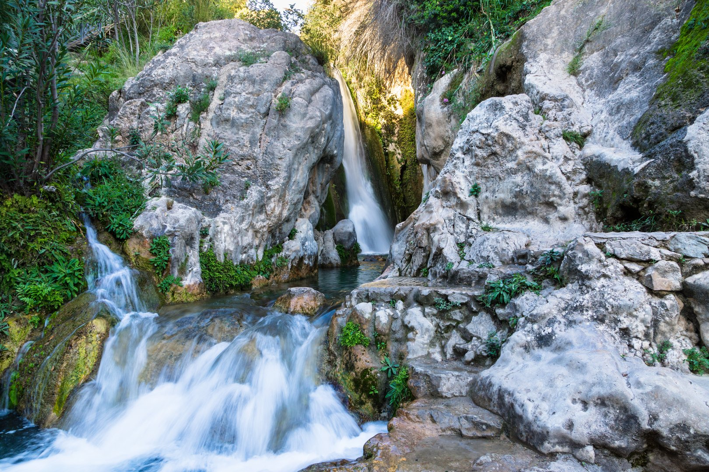
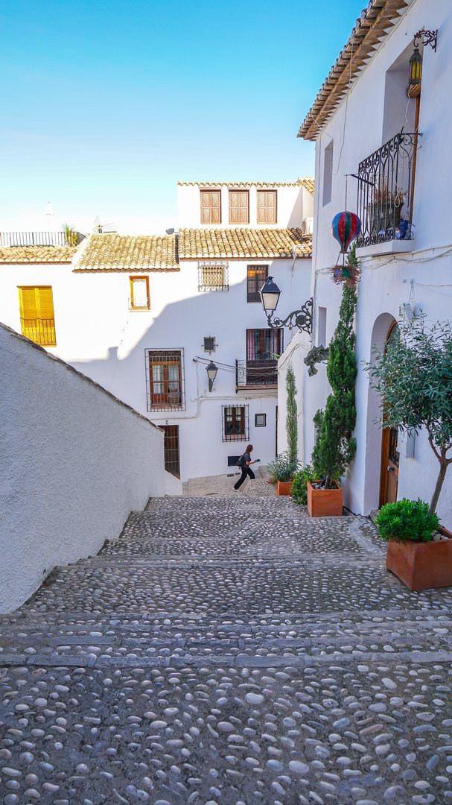
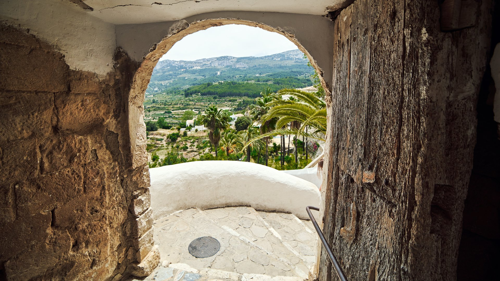

Casa Mi Sueño: Jouw Droomplek onder de Spaanse Zon
Ontsnap naar de Costa Blanca en ervaar de warmte van ons persoonlijk vakantiehuis. Creëer onvergetelijke herinneringen in een oase van rust, ruimte en Spaanse charme.
Ons thuis, jouw vakantieplek
Een echt thuis, weg van huis
Dit is ons eigen huis, een plek waar we zelf graag zijn en met liefde voor zorgen. Geen standaard verhuurobject, maar een warm en persoonlijk thuis dat we met plezier delen als wij er niet zijn.
Ideaal voor ontspanning en samenzijn
Casa Mi Sueño is ingericht voor mooie momenten. Of je nu wilt ontspannen bij het zwembad, gezellige avonden op het terras wilt beleven, of gewoon even helemaal tot rust wilt komen – hier vind je de ruimte en sfeer die daarvoor nodig is.
Prachtige mediterrane tuin met privézwembad
Het zwembad is het hart van onze tuin. Kristalhelder water, omringd door groene planten, zonnige plekjes en fijne schaduwhoekjes. Een heerlijke plek waar je je onmiddellijk zult thuis voelen.
Ons plekje onder de zon
Wanneer we zelf niet in Spanje zijn, stellen we Casa Mi Sueño graag open voor gasten. Stel je eens voor: wakker worden met het zachte geluid van het zwembad, de geur van mediterrane kruiden en die heerlijke stilte die zo kenmerkend is voor de Spaanse ochtend.
We hebben elk hoekje met zo veel liefde ingericht dat je je direct thuis zult voelen. De kinderen kunnen eindeloos spelen terwijl je geniet van een goed boek en een koel drankje. Dit is vakantie zoals vakantie bedoeld is.
Sfeer van de regio
L'Alfàs del Pi en de Costa Blanca bieden een perfecte combinatie van rust en vertier. Van de geur van sinaasappelbloesem tot de azuurblauwe zee – hier ontdek je het authentieke Spanje.

Natuurlijke schoonheid
Op slechts 20 minuten rijden vind je de spectaculaire watervallen van Algar. Kristalhelder water dat over natuurlijke terrassen stroomt, omgeven door weelderige vegetatie. Een verfrissende oase van rust en natuurpracht.
Ontdek de omgeving →
Authentiek Spaans leven
Wandel door de sfeervolle witte straatjes van Altea, waar de tijd stil lijkt te staan. Ontdek verborgen pleintjes, lokale kunstgaleries en gezellige terrasjes waar je kunt genieten van de mediterrane sfeer.
Bekijk onze tips →
Historische parels
Bezoek het majestueuze kasteel van Guadalest, een middeleeuws fort dat hoog boven de vallei uittorent. Geniet van adembenemende uitzichten en ontdek de rijke geschiedenis van deze regio.
Lees meer →Wat onze gasten zeggen
"Wat een geweldige plek om te verblijven! Het huis is prachtig ingericht en heeft alles wat je nodig hebt. De tuin is een oase van rust en de zwembad is heerlijk verfrissend. We hebben genoten van de mooie wandelingen in de omgeving en de lokale restaurants zijn echt een aanrader. We komen zeker terug!"
"Perfecte vakantie gehad! Het huis is ruim en comfortabel, met een geweldig uitzicht. We hebben veel tijd doorgebracht in de tuin en bij het zwembad. De kinderen hebben zich prima vermaakt in het zwembad en we hebben heerlijk gegeten in de buitenkeuken. De eigenaren zijn erg behulpzaam en reageren snel op vragen. Een echte aanrader!"
"We hebben een fantastische week gehad in dit mooie vakantiehuis. De ligging is perfect, dichtbij het strand en de stad, maar toch rustig. Het huis is van alle gemakken voorzien en de tuin is prachtig. We hebben genoten van de bbq en de zwembad. De communicatie met de eigenaren verliep soepel. Zeker voor herhaling vatbaar!"
Nieuwsgierig geworden?
Lees meer over het huis en de prachtige omgeving. Ontdek waarom Casa Mi Sueño de perfecte plek is voor je vakantie aan de Costa Blanca.
Ontdek het huis